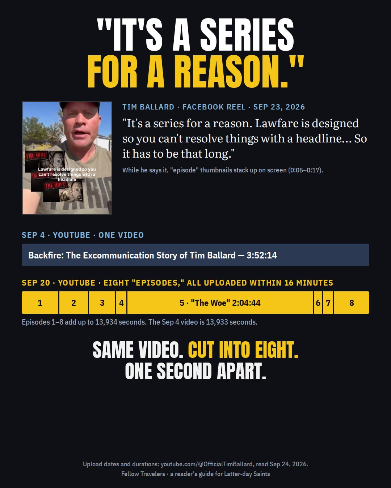
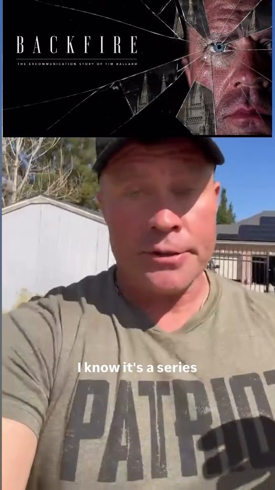
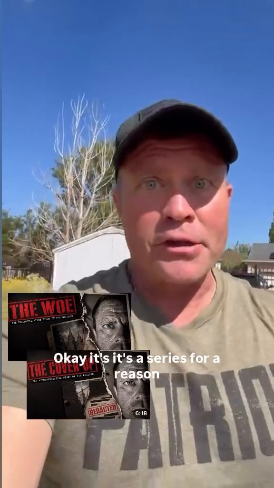
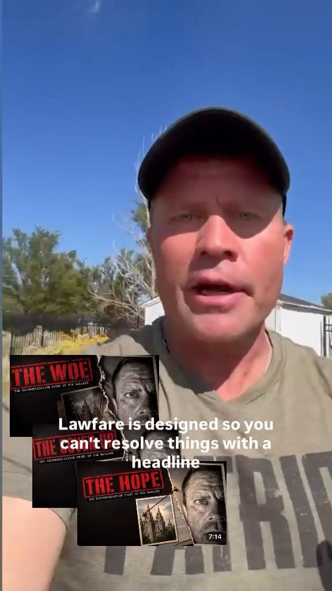
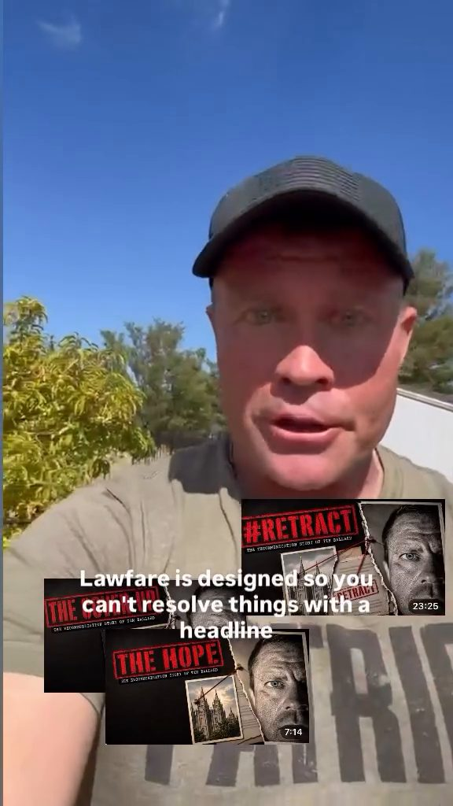
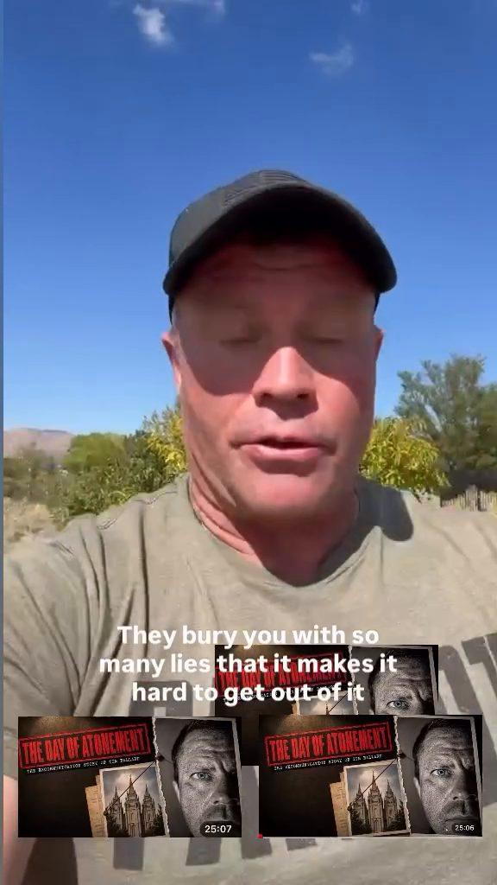
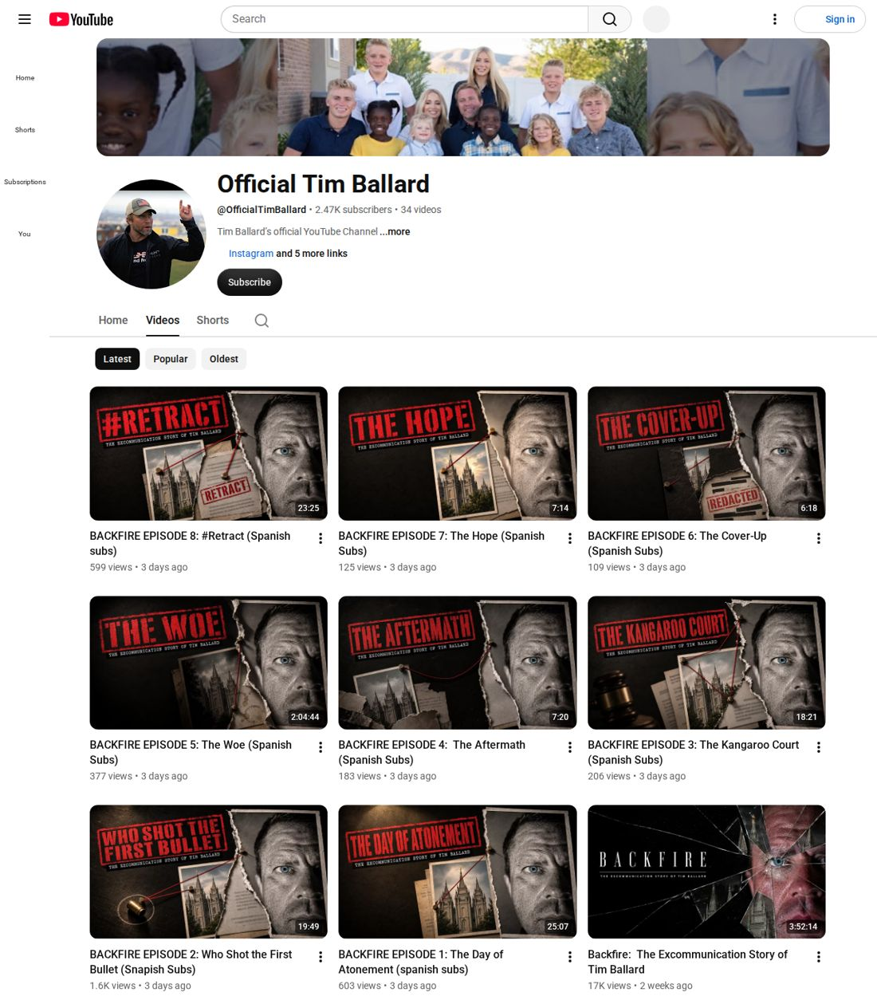
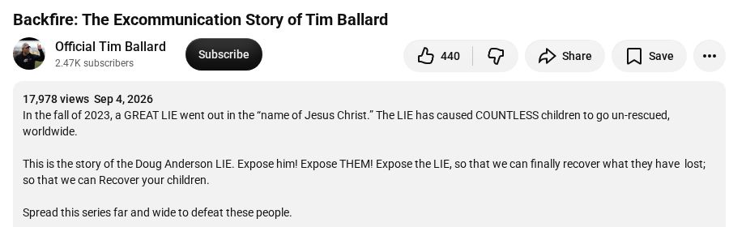
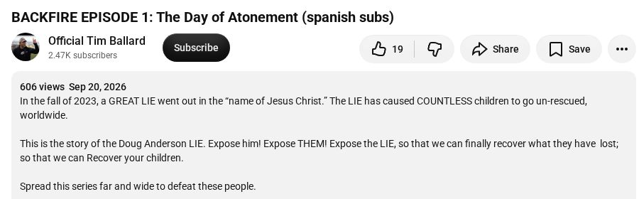

"It's a series for a reason"
Tim Ballard says Backfire has to be long and split into episodes because of "lawfare." His own YouTube channel shows how the current episodes were made.

What he said
In a Facebook reel titled "The Church People vs. The Ballard Family: #1 Question Answered," posted the evening of September 23, Ballard opens with this (0:03–0:16, machine transcript):
"I know it's a series. It's a series for a reason. Lawfare is designed so you can't resolve things with a headline. That's the whole point. It buries you with so many lies it makes it hard to get out of it. So it has to be that long." facebook.com/reel/1060843276711705
While he says it, a Backfire banner and then episode thumbnails appear on screen: "The Woe," "The Cover-Up," "The Hope," "#Retract," "The Day of Atonement."





What his YouTube channel shows
Every card in the reel is a real video on his channel, with the same title and running time. The upload records show where those episodes came from.
| Title on YouTube | Uploaded (MT) | Length | Seconds | Video ID |
|---|---|---|---|---|
| Backfire: The Excommunication Story of Tim Ballard | Sept 4, 5:59 pm | 3:52:14 | 13,933 | pBo_2DYxfrY |
| Episode 1: The Day of Atonement (spanish subs) | Sept 20, 8:56 pm | 25:07 | 1,506 | N4nBRl9B_Ks |
| Episode 2: Who Shot the First Bullet (Snapish Subs) | Sept 20, 8:57 pm | 19:49 | 1,189 | IkxWDpNkzYU |
| Episode 3: The Kangaroo Court (Spanish Subs) | Sept 20, 9:01 pm | 18:21 | 1,100 | bDFtdh9ViuM |
| Episode 4: The Aftermath (Spanish Subs) | Sept 20, 9:05 pm | 7:20 | 440 | 7PONUtj_vnw |
| Episode 5: The Woe (Spanish Subs) | Sept 20, 9:05 pm | 2:04:44 | 7,484 | pC_X31ZAFK0 |
| Episode 6: The Cover-Up (Spanish Subs) | Sept 20, 9:07 pm | 6:18 | 377 | 3zgujfJhRkg |
| Episode 7: The Hope (Spanish Subs) | Sept 20, 9:07 pm | 7:14 | 434 | AYhFyEz092o |
| Episode 8: #Retract (Spanish subs) | Sept 20, 9:12 pm | 23:25 | 1,404 | sYuCqWc24Ys |
What that shows
- The eight YouTube episodes are the Sept 4 video, cut into pieces. Their lengths add up to that one video, one second apart.
- All eight were uploaded in 16 minutes on the evening of Sept 20, sixteen days after the full video, each labeled with Spanish subtitles.
- Episode 5, "The Woe," is over two hours long, more than half the whole video. The "episodes" are not built around the length a story needs. They are cuts of one finished video.
- So "it has to be that long" describes how he chose to package it. The YouTube episodes the reel shows were cut from a video that was already up in one piece.
What this page does not claim
Ballard has called Backfire a series from the start. The Sept 4 video's own description says "Spread this series far and wide."
It also began earlier than this YouTube upload. Posts on his X account, compiled with Grok, show an Episode 1 on November 19, 2025 and Episode 3, "The Kangaroo Court," on December 6, 2025 (see Part 2). Those 2025 releases are not examined here, including who they blamed. Everything above is limited to what his YouTube upload records show.
Screenshots


